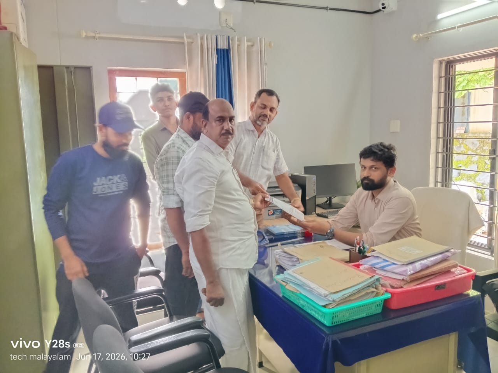

കുമ്മനം: അമ്പൂരം, പൊന്മല പ്രദേശങ്ങളിൽ ഇലക്ട്രിക് പോസ്റ്റുകളിലും ലൈനുകളിലും കാട്ടുചെടികളും വള്ളിപ്പടർപ്പുകളും പടർന്നുപന്തലിച്ചിട്ടും കെ.എസ്.ഇ.ബി. നടപടി സ്വീകരിക്കാത്തതിൽ വ്യാപക പ്രതിഷേധം. കെ.എസ്.ഇ.ബി.യുടെ ഈ ഗുരുതരമായ അനാസ്ഥയ്ക്കെതിരെ മുസ്ലിം ലീഗ് അമ്പൂരം ശാഖാ കമ്മിറ്റി അധികൃതർക്ക് പരാതി നൽകി. മഴക്കാലം ശക്തമാകുന്നതോടെ നനഞ്ഞു കിടക്കുന്ന വള്ളിപ്പടർപ്പുകളിൽ നിന്ന് വൈദ്യുതി ലൈനുകളിലേക്ക് ഷോർട്ട് സർക്യൂട്ട് ഉണ്ടാകാനും, ഇത് വഴിപോക്കരായ മനുഷ്യർക്കും വളർത്തുമൃഗങ്ങൾക്കും ഒരുപോലെ ജീവഹാനി വരുത്താനുമുള്ള സാധ്യതയേറെയാണ്. നിലവിൽ ചെറിയൊരു കാറ്റടിച്ചാൽ പോലും പ്രദേശത്ത് മണിക്കൂറുകളോളം വൈദ്യുതി മുടങ്ങുന്നത് പതിവായിരിക്കുകയാണ്.
പ്രധാന റോഡുകളുടെ വശങ്ങളിലെ മരച്ചില്ലകൾ മാത്രം വെട്ടിമാറ്റി (ടച്ചിങ്സ് വെട്ടി) കെ.എസ്.ഇ.ബി. അധികൃതർ കൈയൊഴിയുകയാണെന്നാണ് നാട്ടുകാരുടെ ആക്ഷേപം. ജനങ്ങൾ ഏറെ താമസിക്കുന്ന ഇടപ്രദേശങ്ങളിലെയും ഉൾറോഡുകളിലെയും ലൈനുകളിലേക്ക് പടർന്നുകയറിയ കാടുകൾ പൂർണ്ണമായും വെട്ടിമാറ്റാൻ അധികൃതർ തയ്യാറാകുന്നില്ല. ഇതാണ് ചെറിയൊരു കാറ്റിലോ മഴയിലോ കറന്റ് പോകുന്ന സാഹചര്യമുണ്ടാക്കുന്നത്. തുടർച്ചയായ വൈദ്യുതി തടസ്സം ജനജീവിതത്തെ സാരമായി ബാധിച്ച പശ്ചാത്തലത്തിലാണ് മുസ്ലിം ലീഗ് അമ്പൂരം ശാഖാ കമ്മിറ്റി കെ.എസ്.ഇ.ബി.ക്ക് രേഖാമൂലം പരാതി നൽകിയത്. പ്രദേശത്തെ വള്ളിപ്പടർപ്പുകൾ അടിയന്തരമായി വെട്ടിമാറ്റി അപകടാവസ്ഥ ഒഴിവാക്കണമെന്നും, അല്ലാത്തപക്ഷം ശക്തമായ ജനകീയ പ്രതിഷേധ പരിപാടികളിലേക്ക് നീങ്ങുമെന്നും മുസ്ലിം ലീഗ് ശാഖാ കമ്മിറ്റി ഭാരവാഹികൾ അറിയിച്ചു.